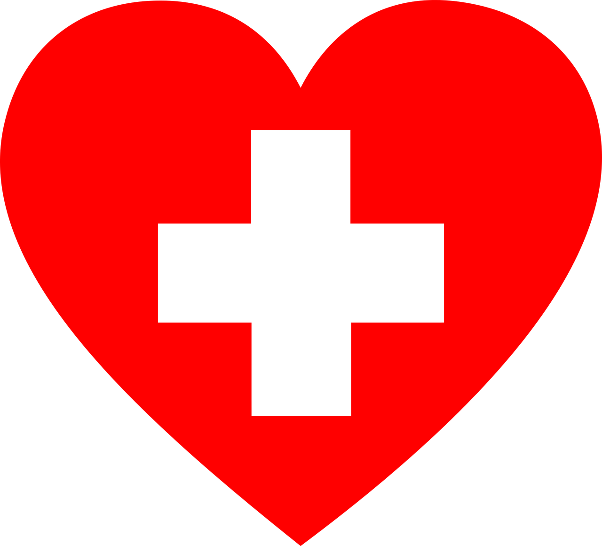

금연 후 시간 경과에 따른 신체적 기록
금연하는 방법
첫째, 담배를 끊어야겠다는 생각을 가지는 것이 가장 중요하다.
담배는 단순한 기호품이 아니라 해로운 약물이라는 사실을 깨닫는 것이 필요하다. 담배는 흡연자 자신에게 일종의 약물중독과 같다. 자신의 건강을 파괴하고 경제적 손해를 입힌다. 미국의학협회에서는 담배를 마약과 같이 불법화해야 한다고 주장할 정도이다.
둘째, 담배를 끊을 수 있는 기회를 잘 이용하자.
담배를 끊을 수 있는 절호의 기회가 있다. 기관지염, 십이지장궤양, 고혈압 등 담배와 관련이 있는 병을 앓게 되면 바로 그때가 담배를 끊을 수 있는 좋은 기회이다. 아이가 감기에 걸렸을 때도 마찬가지이다. 이런 기회를 잘 이용하면 전화위복이 될 수 있다.
셋째, 결심을 굳게 하고 금연일을 정하자.
흡연은 약물중독과 비슷하지만 굳은 결심만 있다면 금연에 성공할 가능성이 높다. 결심을 하면 즉시 ‘금연일(담배를 끊는 날)’을 정하자. 금연일은 대개 7∼10일 후로 잡는 것이 좋다. 너무 뒤로 잡으면 마음이 흐트러질 가능성이 높다. 그러나 스트레스가 많은 때는 피하는 것이 좋다. 시험을 앞두고 금연일을 잡으면 실패할 확률이 높다.
넷째, 담배를 끊는다는 사실을 여러 사람에게 널리 알리자.
담배를 끊으려면 주위의 도움이 필요하다. 특히 가족의 도움은 필수적이다. 금연에 실패하면 창피할까 봐 주위에 말을 안 하는 경우가 있다. 그러나 이것은 잘못이다. 혹시 금연을 방해하는 몰지각한 동료가 있는 경우에는 예외로 할 수도 있다. 한 가지 알아 둘 것은 한 번에 담배를 끊는 사람은 매우 드물다는 사실이다.
금연 직후부터 얻을 수 있는 유익한 효과

1. 입냄새가 나지 않고, 치아가 하얗고 건강해집니다.
2. 옷과 머리에 나쁜 냄새가 사라집니다.
3. 손가락의 착색이 사라집니다.
4.음식 맛이 좋아지며, 후각이 돌아옵니다.
5. 계단을 오를 때 숨이 덜 차게 됩니다.